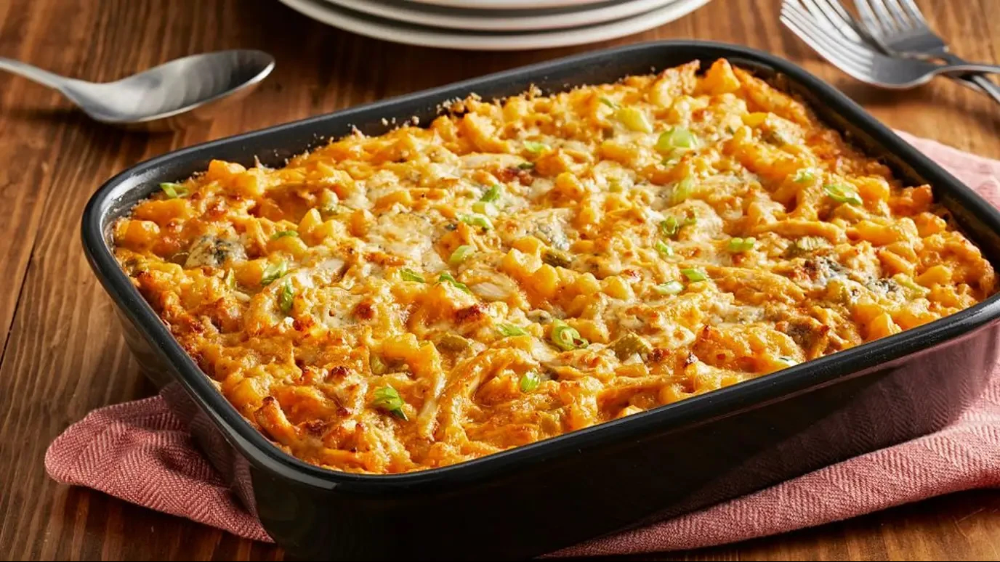

Home

Buffalo Chicken Mac and Cheese
In just 30 minutes, you'll be ready to dig into a creamy, delicious bowl
of buffalo chicken mac and cheese. Our recipe features a scrumptious blend
of cheese, chicken and Franks RedHot® sauce, and a sprinkle of green
onions and blue cheese for additional flavor. It's the perfect dish for
Game Day and easy enough for any day!
Ingredients
- 1 lb / 16 oz elbow macaroni
- 1/2 cup unsalted butter
- 1/2 cup all-purpose flour
- 4 cups milk
- 4 cups shredded cheese (half cheddar, half pepper jack)
- 1/2 cup crumbled blue cheese
-
1/2 cup Frank's RedHot Original Cayenne Pepper Hot Sauce, plus 2
tablespoons for drizzling
- 2 cups cooked chicken
- 3 scallions, diced
Steps
-
PREHEAT oven to 350 F. Spray a 13x9-inch baking dish
with no stick cooking spray; set aside. Cook macaroni as directed on
package using minimum cook time. Drain well.
-
MEANWHILE, melt butter in 3-quart saucepan on low heat.
Whisk in flour; cook and stir until smooth. Gradually stir in milk.
Bring to boil, stirring constantly. Boil 1 minute until mixture is hot
and bubbly. Add cheese and 1/2 cup of the RedHot Sauce; stir until
cheese is melted and mixture is smooth.
-
ADD cooked macaroni, chicken and celery to cheese
sauce; stir gently to coat well.
-
POUR macaroni mixture into prepared baking dish.
Sprinkle with green onions and blue cheese crumbles if desired.
-
DRIZZLE top with remaining 2 tablespoons RedHot Sauce.
Bake, uncovered, 15 to 20 minutes or until bubbly and lightly browned on
top. Let stand 5 minutes before serving.